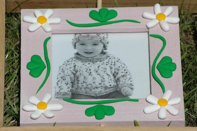
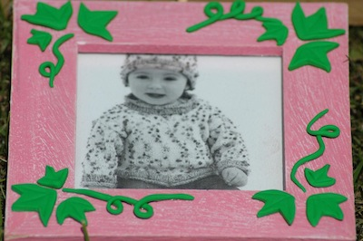
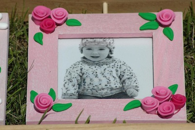
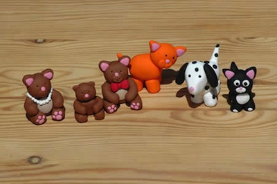
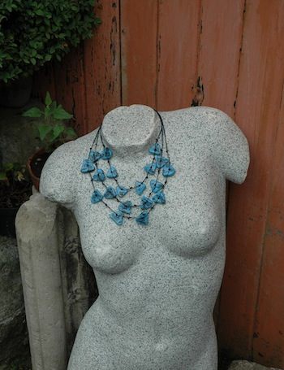
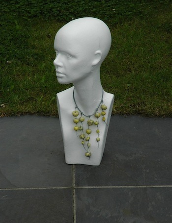
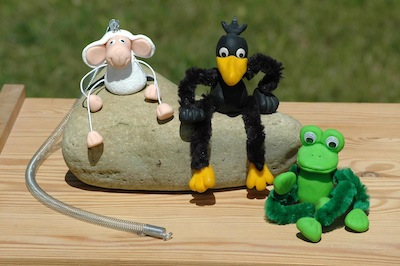

Wat is Fimo?
Fimo is een kunststofklei die geproduceerd werd door Eberhard Faber. Sinds januari 2010 produceert Staedtler de fimo en zorgt ook voor de verdeling.
Fimo bestaat in verschillende kleuren die onderling mengbaar zijn en die hard wordt door bakken in een gewone keukenoven op 110°C gedurende 30 minuten. De baktemperatuur en baktijd staan op ieder pakje vermeld.
Oorspronkelijk was er alleen Fimo Classic, een vaak harde massa, vaak lastig om te kneden. De kwaliteit is echter sterk geëvolueerd en is momenteel een aangename massa geworden, goed te kneden en zeer stabiel voor 3D vormgeving. Fimo Classic bestaat enkel in 24 basiskleuren.
Daarnaast is er ook de Fimo Soft. Dit is een nog zachtere klei die nog makkelijker kneedbaar is. Deze klei is zeer geschikt voor het maken van allerlei decoraties, kralen, kleine figuren,... Ook zeer geschikt voor kinderen vanaf 8 jaar. Fimo Soft bestaat in 24 basiskleuren (niet altijd identiek aan de basiskleuren van Fimo Classic)
En tenslotte is er ook Fimo Effect: deze 24 effectkleuren bevatten transparante kleuren, glitter kleuren, metallic kleuren, 2 steen-effect kleuren en glow-in-the-dark.
Alle Fimo-soorten zijn onderling mengbaar en kunnen door elkaar gebruikt worden.
Fimo droogt niet aan de lucht en kan dus gemakkelijk een tijd bewaard worden. Enkele voorwaarden: niet in het volle dag/zonlicht leggen en niet op warme plaatsen bewaren. Het is aan te raden de Fimo, eenmaal ze geopend is, te bewaren in een plastic zakje, in keukenfolie,... om de klei te beschermen tegen stof.
Fimo is zeer geschikt om figuren te boetseren, maar ook om er allerlei kralen mee te maken. Er bestaan heel wat technieken om Fimo te bewerken.
      